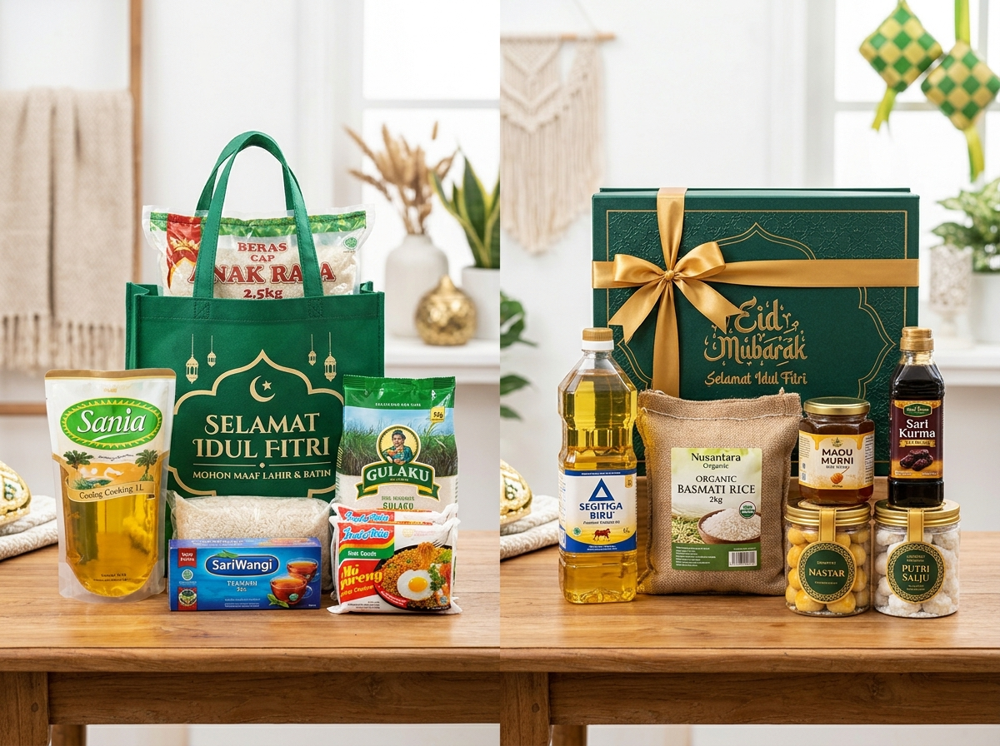

Dalam perencanaan bingkisan hari raya, anggaran merupakan faktor penentu utama. Memahami struktur pembentuk harga parcel sembako membantu Anda mengoptimalkan alokasi dana agar setiap rupiah menghasilkan bingkisan yang bermanfaat dan membanggakan.
Mengapa Harga Parcel Sembako Lebaran Berbeda-beda?
Harga parcel sembako Lebaran berbeda karena setiap paket memiliki komposisi, kualitas produk, dan jenis kemasan yang tidak selalu sama.
Parcel dengan bahan pokok dasar seperti beras, minyak, dan gula memiliki struktur biaya yang jauh berbeda dari paket yang dilengkapi sirup botol kaca, stoples kue kering, madu murni, atau perlengkapan ibadah. Selain itu, pemilihan antara keranjang rotan anyam, boks karton rigid board, goodie bag spunbond, dan bahan dekorasi pita sangat memengaruhi total biaya akhir.
Untuk memahami variasi produk yang biasa digunakan, Anda dapat membaca 10 ide isi parcel sembako Lebaran serta panduan induk parcel Lebaran sembako.
Berapa Kategori Harga Parcel Sembako Lebaran?
Secara garis besar, kategori harga parcel sembako dapat diklasifikasikan menjadi tiga kelompok anggaran utama:
1. Paket Ekonomis di Bawah Rp100.000
Paket ekonomis dirancang untuk kebutuhan pembagian bingkisan massal, bakti sosial perusahaan, atau santunan fakir miskin.
Contoh komposisi & perkiraan biaya:
- Minyak goreng kemasan bantal/pouch 500 ml
- Gula pasir 500 gram
- Teh celup isi 25 kantong
- 3 bungkus mi instan pilihan
- 1 bungkus wafer / biskuit sachet
- Wadah tas spunbond motif Idulfitri yang rapi
2. Paket Lengkap dan Premium Rp100.000 – Rp500.000+
Menawarkan variasi komoditas pangan yang lebih melimpah dengan kemasan kokoh. Sangat disukai untuk hadiah keluarga inti, mertua, jajaran staf perusahaan, dan nasabah loyal.
Contoh komposisi:
- Beras kualitas premium 3–5 kg
- Minyak goreng botol 2 liter
- Gula pasir putih 1 kg
- Mentega kaleng & tepung terigu 1 kg
- Susu kental manis kaleng & sirup buah
- Biskuit aneka rasa atau toples kue kering
- Kemasan keranjang rotan anyam atau hardbox luxury

3. Paket Tematik Sehat
Menyasar segmen penerima yang mengutamakan asupan makanan alami dan organik, dengan kisaran harga mulai dari Rp250.000 hingga Rp600.000+, berisi beras merah organik, extra virgin olive oil, madu murni, dan granola kacang-kacangan.
Faktor Apa Saja yang Memengaruhi Harga Parcel Sembako?
Terdapat beberapa komponen utama yang membentuk struktur harga sebuah parcel:
- Kualitas Merek dan Gramatur: Merek beras premium beraroma pandan wangi tentu memiliki selisih harga dibandingkan beras biasa. Pastikan Anda memeriksa berat bersih (netto) setiap barang.
- Variasi dan Banyaknya Item: Semakin banyak item yang dimasukkan, semakin besar biaya bahan baku. Namun, keseimbangan komposisi lebih utama daripada sekadar kuantitas.
- Material Wadah Kemasan: Keranjang rotan alami dan kotak hardbox magnetik memiliki biaya produksi lebih tinggi dibandingkan tas spunbond atau kardus lipat.
- Dekorasi dan Aksesori: Plastik shrink wrapping, pita satin ganda, kartu ucapan custom berlogo, dan ornamen ketupat mini.
- Ongkos Logistik Distribusi: Sembako memiliki bobot fisik yang cukup berat. Pengiriman armada mobil khusus atau ekspedisi luar kota membutuhkan perhitungan biaya per kilogram yang transparan.
Bagaimana Cara Memilih Parcel Sembako Sesuai Budget?
Untuk menghindari pembengkakan biaya, tentukan terlebih dahulu batas plafon anggaran maksimal (budget cap). Setelah itu, prioritaskan produk kebutuhan pokok yang paling esensial bagi calon penerima.
Jika anggaran terbatas, utamakan kualitas bahan pangan dan gunakan kemasan yang sederhana namun tetap rapi dan bersih. Apabila anggaran lebih leluasa, Anda dapat meningkatkan grade kemasan ke hardbox elegan dan menambahkan pelengkap istimewa seperti toples kue kering dari koleksi parcel spesial.
Bagaimana Cara Menghitung Biaya Parcel Sembako?
Bagi pengelola usaha maupun panitia pengadaan kantor, rumus Harga Pokok Penjualan (HPP) parcel sembako dihitung sebagai berikut:
HPP Parcel = Biaya Produk + Biaya Wadah & Dekorasi + Biaya Tenaga Kerja + Alokasi Biaya Logistik
Komponen ini memastikan seluruh pengeluaran—mulai dari pembelian beras, pembelian pita, upah perakitan, hingga biaya bubble wrap pelindung—tercatat rapi dan terkontrol sebelum pesanan diproduksi massal.
Bagaimana Perusahaan Menghemat Biaya Pengadaan Parcel?
Bagi divisi HRD dan Pengadaan yang merencanakan paket sembako Lebaran untuk karyawan, efisiensi anggaran dapat dicapai melalui strategi berikut:
- Konsolidasi Volume Pesanan: Menggabungkan pesanan antar-cabang kantor untuk mendapatkan diskon harga grosir dari supplier.
- Kunci Spesifikasi di Awal: Hindari perubahan item di tengah proses perakitan yang dapat menimbulkan biaya penyesuaian dari pihak vendor.
- Pemesanan Lebih Awal (Early Bird): Memesan pada H-30 sebelum Lebaran menghindarkan instansi dari lonjakan harga bahan pokok musiman menjelang hari raya.
- Minta Rincian Transparan: Pastikan surat penawaran mencantumkan secara tegas apakah harga sudah termasuk ongkos kirim ke alamat kantor atau belum.
Mengapa Tidak Sebaiknya Memilih Parcel Hanya Berdasarkan Harga?
Menjadikan harga termurah sebagai satu-satunya tolok ukur sering kali berujung pada kekecewaan. Harga yang terlampau murah patut dicurigai:
- Menggunakan produk bahan pangan yang mendekati masa kedaluwarsa.
- Gramatur barang dikurangi (misalnya minyak 400 ml alih-alih 500 ml standar).
- Kemasan luar rapuh dan rentan jebol saat diangkut.
- Kurangnya proteksi bubble wrap sehingga produk botol kaca berisiko pecah.
Evaluasi menyeluruh terhadap reputasi vendor parcel Lebaran profesional jauh lebih menjamin kepuasan penerima dan menjaga nama baik Anda atau perusahaan.
Pertanyaan Seputar Harga Parcel Sembako Lebaran
Harga sangat bervariasi bergantung pada spesifikasi item dan wadah, mulai dari paket hemat di bawah Rp100.000 hingga paket lengkap dan eksklusif Rp100.000 – Rp500.000+.
Penggunaan komoditas kelas atas (seperti beras organik dan minyak canola), wadah hardbox kokoh, penambahan stoples kue kering premium, serta biaya pengiriman multi-titik.
Ya. Kami melayani pengadaan corporate sembako dalam skala puluhan hingga ribuan paket dengan jaminan konsistensi mutu dan jadwal pengiriman terkontrol.
Hubungi admin kami dan sampaikan estimasi jumlah paket, anggaran per pax, komposisi isi yang diharapkan, serta kota tujuan pengiriman untuk mendapatkan surat penawaran resmi.
Kesimpulan
Harga parcel sembako Lebaran mencerminkan kualitas isi, kekuatan wadah, dan keandalan sistem distribusi. Baik paket ekonomis maupun paket premium, keduanya mampu memberikan kebermanfaatan tinggi asalkan disusun dengan penuh pertimbangan dan diserahkan kepada penerima yang tepat.
Dapatkan inspirasi kombinasi isi selengkapnya di artikel 10 ide isi parcel sembako Lebaran atau pelajari panduan induknya di halaman parcel Lebaran sembako.
Butuh Simulasi Anggaran Parcel Lebaran untuk Kantor Anda?
Kirimkan rincian kebutuhan Anda sekarang. Tim kami siap membantu menyusun proposal pengadaan parcel sembako yang transparan dan sesuai anggaran perusahaan.